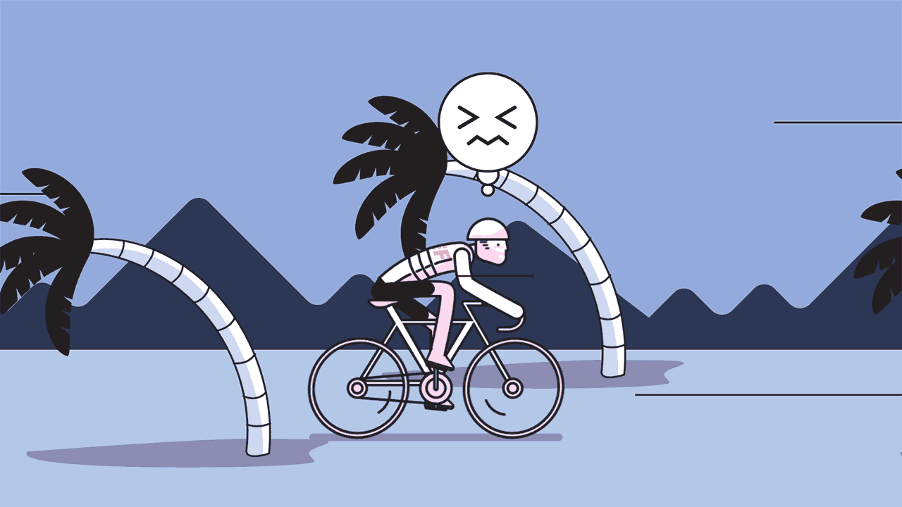
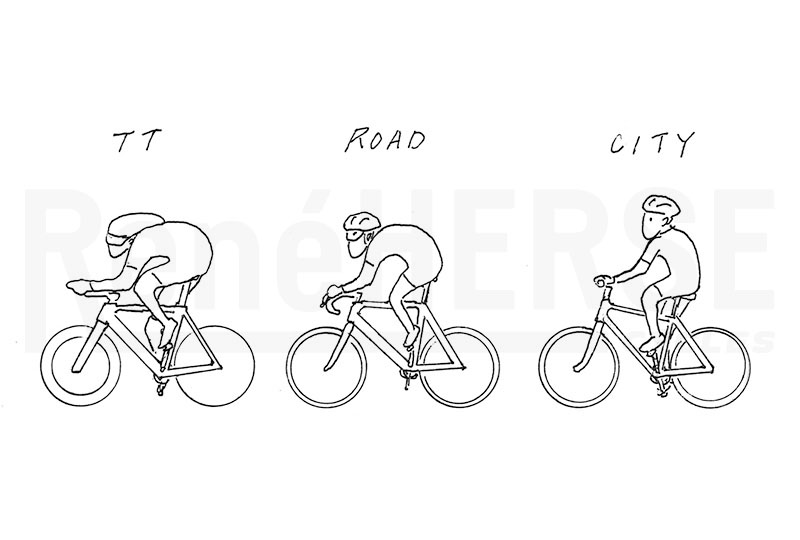
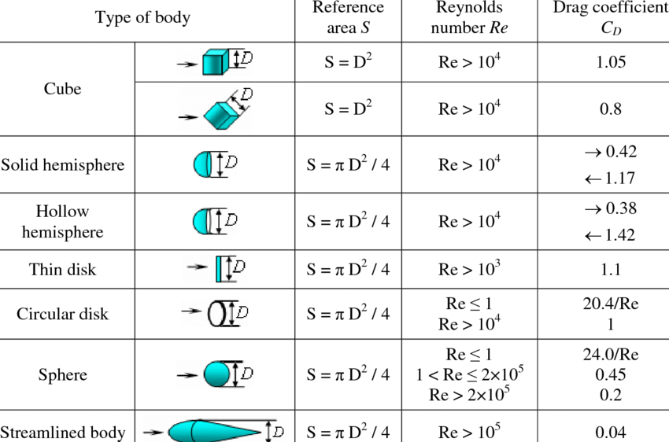
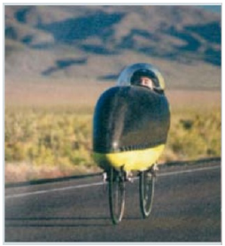
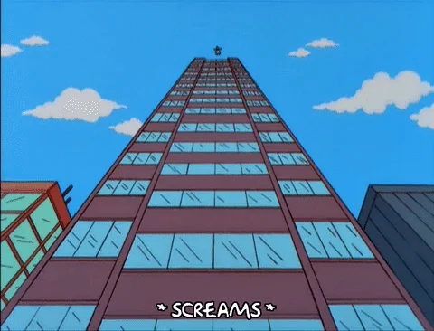

Dynamik
Forklaring af bevægelse
Jacob Debel
Fysik B
Newtons love

N1: Newtons 1. lov
Et objekt, der ikke er påvirket af en kraft, vil enten fortsætte i en jævn bevægelse eller ligge stille.

Friktionen mellem is og curlingsten er næsten nul. Derfor er der ingen vandret kraft, som påvirker stenen, og stenen fortsætter i en jævn bevægelse.
N2: Newtons 2. lov
Hvis den resulterende kraft på en genstand med massen \(m\) er \(\vec{F}_\text{res}\), vil genstanden bevæge sig med accelerationen \(\vec{a}\) bestemt ved ligningen
\[\vec{F}_\text{res} = m \cdot \vec{a}\,.\]
Den resulterende kraft
- Summen af alle kræfter regnet som vektorer (eller med fortegn). \[\vec{F}_\text{res} = \Sigma_i \vec{F}_i = \vec{F}_1 +\vec{F}_2 + \dots\]

N2: Newtons 2. lov


N2: Newtons 2. lov

N3: Newtons 3. lov
Aktion er lig reaktion
Til enhver kraft fra et legeme A på et legeme B svarer en lige så stor og modsatrettet kraft fra B på A.


Opgaver
Opgave 1
En bil på 1800 kg accelerer fra hvile til 100 km/h på 9.4 s.
- Hvor stor er bilens acceleration?
- Bestem den resulterende kraft på bilen.
Opgave 2

En pram trækkes af to slæbebåde. Den ene trækker med 240 kN mod nord og den anden med 350 kN mod nordvest.
- Tegn en skitse af situationen set fra luften.
- Beregn størrelsen af den resulterende kraft fra slæbebådene.
Forskellige kræfter

- Chatgpt er altså ikke nogen haj til fysik… Vi må hellere gøre det selv.
(Her er lidt af min prompt)
- Jeg er gymnasielærer og underviser i fysik. Du skal i dag være min gode kollega, som også er ekspert i fysik. Vi skal sammen finde på nogle gode billeder, som viser forskellige former for kræfter inden for fysik.
- Hvordan kan man kombinere normalkraft, tyngdekraft, friktion og luftmodstand i et billede?
- Det var en god idé. Jeg vil gerne have dig til at tegne alt dette som en skitse, som var den taget fra en fysikbog. Alle de nævnte kræfter skal angives med vektorpile, og de skal have de korrekte angrebspunkter.
Vi prøver lige selv

Tyngdekraft

Tyngdekraft
\begin{align*} \vec{F}_{t} &= m \cdot \vec{g} \quad \text{med retning} \\ F_t &= m \cdot g \quad \text{kun størrelsen} \end{align*}
- \(g= 9.82\, m/s^2\) ved i Danmark.
- \(g= 9.78\, m/s^2\) ved ækvator.
- \(g= 9.83\, m/s^2\) på Nord- eller Sydpolen.
- Tegnes som en vektor med angrebspunkt i massemidtpunktet og peger "nedad" mod Jordens centrum(massemidtpunkt).

Opgaver
Opgave 1
- Vis, vha omregninger, at \(\frac{N}{kg} = \frac{m}{s^2}\).
Opgave 2
- Beregn størrelsen af tyngdekraften på dig selv (og din sidemand m/k).
Opgave 3 (opg 8.4 i basisfysik B s. 143)
Du vil gerne vide, hvor stærk du er. Derfor beder du onkel Allan om at stille sig på badevægten. Vægten viser 102 kg. Allen er ikke så høj, så du hår et godt greb under hans arme og løfter så meget, du overhovedet kan. Herved når vægten ned på 54.0 kg. Angiv størrelse og retning for følgende kræfter:
- Den kraft, vægten påvirker Allan med.
- Den kraft, vægten påvirker Allan med, når du løfter allermest.
- Den kraft, du maksimalt klarer at løfte med.
- Den tyngdekraft, der påvirker Allan, når du løfter.
- Tegn et vektordiagram over de kræfter, der påvirker Allan, når du løfter ham maksimalt. Lad Allan være en lille cirkel i diagrammet.
OMg - Oh My 9.82 m/s2

Snorkræfter
- Snore kan bruges til at overføre kræfter mellem objekter.
- Spændingen/kraften i en snor, er den samme alle steder i snoren og kan gå i begge retninger.

Snorkræfter


Opgaver
Opgave 1
En gadelampe hænger i to wirer som vist på figuren. Vejens bredde er 8 m, og hver af de to wirer er 4.5 m lange. Lampen vejer 32 kg.

- Indtegn de givne størrelser på figuren. Indtegn også de kræfter som virker på lampen.
- Bestem højdeforskellen mellem lampen og ophængspunkterne.
- Beregn størrelsen af samtlige kræfter, som påvirker lampen.
Opgave 2
- Lygten har vægten \(w\), altså tyngdekraften \(F_t = w\).
- Bestem snorkræfterne i snor A og B i begge tilfælde (a) og (b) i størrelser af \(w\).

Opgaver
Opgave 3
Vægten af klodsen er \(w =F_t = 60.0N\).
- Hvad er snorkraften i den diagonale snor?
- Find længderne(størrelserne) af de vandrette kræfter \(\vec{F}_1\) og \(\vec{F}_2\), så systemet holdes stilles i den viste position.

Normalkraft
Eller kontaktkraft i basisfysik B.

En enkelt klods

- Indtegn de virkende kræfter.
En enkelt klods

To klodser

- Indtegn de virkende kræfter på den nederste nederste klods.
To klodser

Bordet tipper

- Indtegn lige tyngdekraften og normalkraften i de tre tilfælde.
Bordet tipper

- Hvad sker der med længden af de to kræfter, når bordet vipper mere og mere?
- Hvilken vej går den resulterende kraft, hvis der ikke er nogen friktion mellem bord og bog?
Bordet tipper

- Hvornår er normalkraften lige så stor (men modsatrettet) som tyngdekraften?
- Hvornår er normalkraften nul?
- Opstil en sammenhæng mellem normalkraftens størrelse og vinklen med vandret?
Friktionskræfter
Træk eller skub?


- Ingen forskel på is (nul friktion).
- Men med friktion er der forskel.
Coulombs friktionslov
\[\vec{F}_\text{gnid} = \mu \cdot \vec{F}_N\]
- \(\vec{F}_\text{gnid}\) er gnidnings- eller friktionskraften
- \(\vec{F}_N\) er normalkraften.
- \(\mu\) er en enhedsløs gnidnings- eller friktionskoefficient.


Statisk og dynamisk

- \(\mu_s > \mu_d\)
- Når et legeme ligger står stille, er \(F_\text{gnid} \leq \mu_s \cdot F_N\).
- Når et legeme ligger er i bevægelse, er \(F_\text{gnid} = \mu_d \cdot F_N\).
Friktionskoefficienter

Opgaver


Et lille forsøg

Luftmodstand

Hvornår er det hårdest at forøge sin fart?
- Lav fart?
- Middel fart?
- Høj fart?

- Hvad kan I gøre for at øge jeres fart alligevel?
Forklaringen
Luftmodstand modelleres typisk på følgende måde:
\[F_\text{luftmodstand} = \frac{1}{2} \cdot c_w \cdot \rho \cdot A \cdot v^2\,,\] hvor
- \(\rho\) er luftens densitet.
- \(A\) er tværsnitsarealet/skyggearealet som luften "ser".
- \(v\) er farten.
- \(c_w\) er formfaktoren, som afhænger af faconen og materialevalg.
Formfaktoren
Den simple

Den svære

Afhænger af bl.a. Reynolds tal, som igen bl.a. afhænger af densitet, flow speed, og viskositeter.
Opgave
På billedet ses en speciel cykel, hvor \(c_w\) er presset ned på 0.1, og hvor tværsnitsarealet er 0.4 \(m^2\).
Beregn luftmodstanden på cyklen ved en fart på 60 km/h.
Opskriv formler og forklar. Udfør beregningerner.
Sammenlign med den luftmodstand, som I selv oplever, når I cykler til daglig.
Opskriv formler og forklar. Find selv relevante størrelser for \(c_w\) og tværsnitsareal. Udfør beregninger og kommenter.

Hvem er det værst for?

Opgaver
- Tegn først to skitser. En af Homer og en af en bille, som falder ned.
- Opskriv de kræfter, som virker på Homer og billen, og indtegn dem på jeres skitser.
- Forklar, hvorfor Homer og billen efter nogen tid opnår en konstant hastighed (terminal velocity).
Beregn den terminale hastighed for hhv. Homer og for billen.
I skal selv estimere de relevante værdier for Homer, billen og luften. Det kunne f.eks. være masse, tværsnitsareal, \(c_w\)-værdi, og densitet.
Hookes lov
Opdrift

- Vi vender tilbage til dette, når vi ved noget om tryk.
Tryk og opdrift
Mulige forsøg
Archimedess lov
side 155 eller ballonforløbet fra vibenshus.
Tryk i en væskesøjle
side 161
Impuls
Mulige forsøg
Bevarelse af bevægelsemængde
side 180